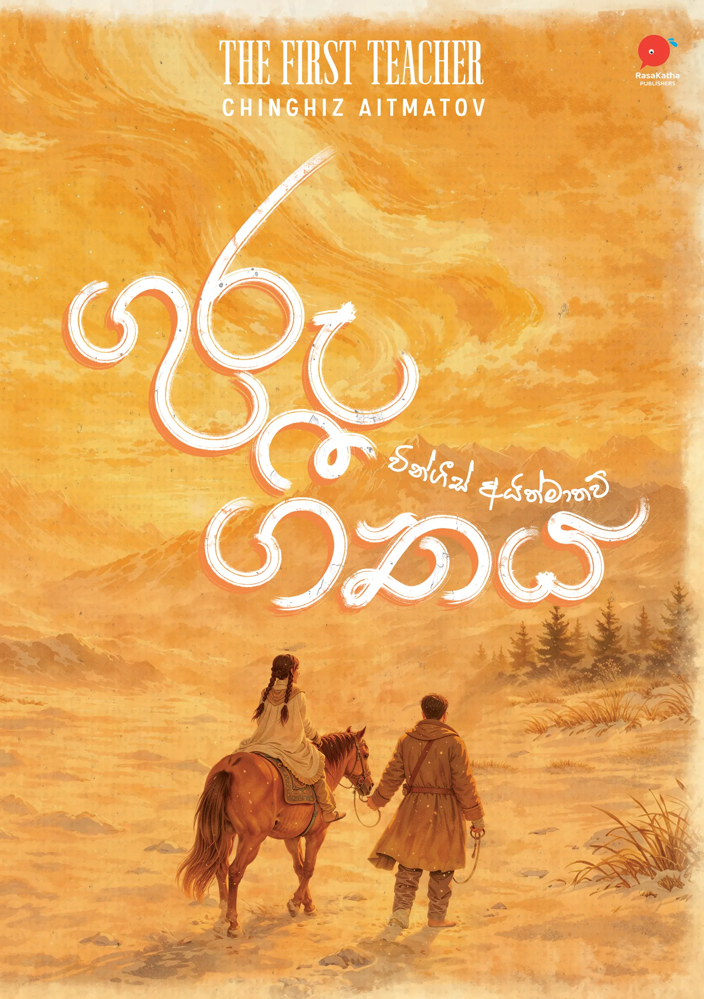
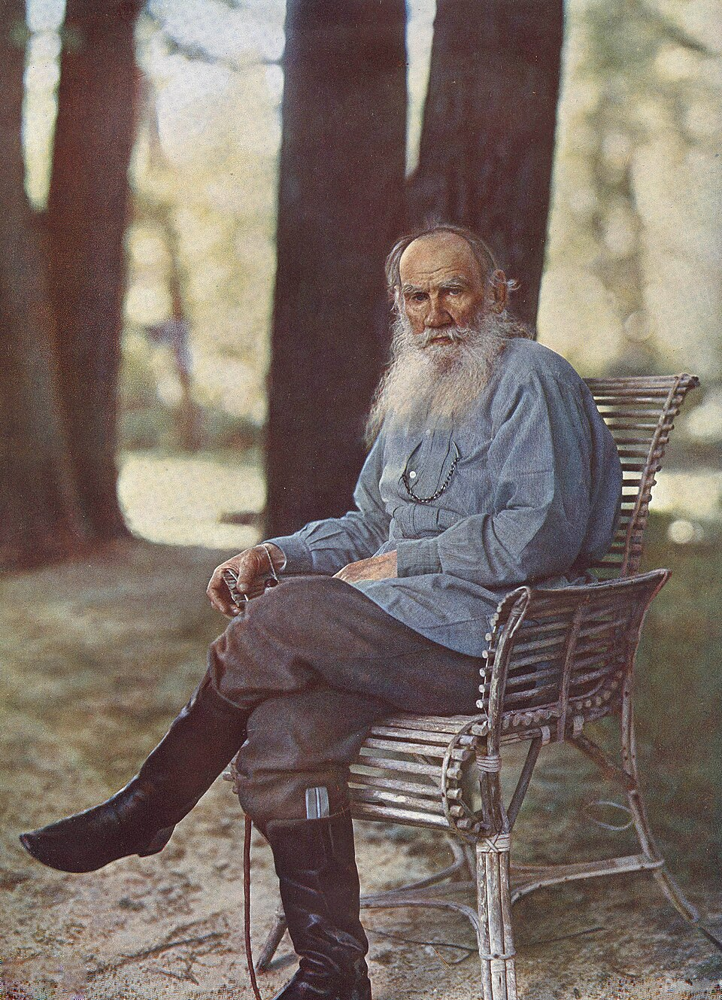

- ප්රාථමික
- වහල්
- වැඩවසම්
- ධනපති
- සමාජවාදී
- කොමියුනිස්ට්

සමස්ත ලංකා හෙද සංගමය
සාහිත්යය කියවීමේ කලාව සහ සංස්කෘතික මිනිසා
මිනිසා කවුද?
Homo Sapiens Sapiens
නූතන මිනිසා, එනම් මේ අපි.
මානව පරිණාමය
ලක්ෂ 3
අදින් වසර ලක්ෂ 3 කට පමණ පෙර මිනිසා බිහි වුනා.
කාලය 3 ක්
අවුරුදු ලක්ෂ 3 කට පෙර මිනිසා කොයි වගේ ද?
ප්රාථමික සාමූහික සමාජයක් ලෙස
මූලික අවශ්යතා
- ආහාර
- වාසස්ථාන
- වර්ගයා බෝකිරීම
මාතෘ මූලික සමාජයක්.
යම් යම් දේපොල එකතු වුනා
දුනු, ඊතල, ගල් ආයුධ, සහ වියලි මස්
- දේපොල
- නායකයින්
- පවුල්
- සටන්
- වහලුන්
වහල් සමාජ ක්රමය
මානව ඉතිහාසයේ අතිදැවැන්ත නිර්මාණ මේ වහලුන් අතින් බිහිවුනා.
- රෝමය
- ග්රීසිය
වහලුන් වහල් හිමියන්ට එරෙහිව කැරලි ගැසීම
වැඩවසම් සමාජ ක්රමය
- රජවරු
- සිටුවරු
- කුල ක්රමය
නිදහස් වෙළෙන්දන්
ධනපති ආර්ථික රටාව
දැන් තිබෙන්නේ ධනපති ආර්ථික රටාවයි.
නමුත් දැන් ධනපති ආර්ථික රටාවත් අර්බුදයට ගිහින් තියෙන්නේ.
- පොදු ජනතාවගේ අයිතීන් අහිමි වීම
- ධනපතියන් විසින් නිර්ධනයින් සූරාකෑම සහ පීඩාවට පත්කිරීම
සමාජවාදී ආර්ථික ක්රම
එය සමාජ සංවර්ධන ක්රියාවලියේ ඉදිරි පියවරක්.
ලෝකයේ සියලු ප්රශ්න විසඳී මිනිසාට සාමකාමීව සිටීමට නම්
කොමියුනිස්ට් ක්රමය
සංස්කෘතික මිනිසා
මුලින්ම සංස්කෘතිය කියන්නේ මොකක්ද කියල තේරුම් ගනිමු.
සංස්කෘතිය
- ඇඳුම් පැළඳුම්
- ආහාරපාන
- ගෙවල් දොරවල්
- ආගමික ස්ථාන
ඔව් ඇත්තටම ඒ සියල්ල සංස්කෘතියට අයිතියි.
අපි නිර්වචනය බලමු
“මිනිසා විසින් නිර්මාණය කරන ලද සියලු දේ සංස්කෘතිය වන්නේය.
මිනිසුන් විසින් සාදන ලද සියලු දේවල්, සිතුවිලි, නිර්මාණ, කලාකෘති ආදී මේ කී නොකී සියලු දේ.
සංස්කෘතික මිනිසා
ලෝකය නිර්මාණය කරනු ලබන මිනිසා.
මිනිසා කරනු ලබන දේවල් ලෝකයට යහපතක් විය යුතුය.
සමාජය සංවර්ධනය නැත්නම් දියුණු කිරීමේ දිශාවට
සමස්ත ලංකා හෙද සංගමය
- කලාව
- විද්යාව
- දර්ශනය
සමාජය යහපත් දිශාවට ගමන් කරවීමට දායක වීම
කලාව
මේ කලාව කියන වචනය විවිධ දාර්ශනිකයන් අර්ථකථනය කරල තියෙනවා

ඇරිස්ටෝටල්
Bust, Palazzo Altemps · Public domain
“කලාව ස්වභාවධර්මයේ අනුකරණයකි.”

ලියෝ ටොල්ස්ටෝයි
S. Prokudin-Gorsky, 1908 · Public domain
“කලාව කියන්නෙ, කලාකරුවා තමා ලැබූ අත්දැකීම් අනුන්ගේ සිතට ද ඒ හා සමාන දෝංකාර දීමට සැලැස්වීම කලාවයි”
මාක්ස්වාදීන්
“ප්රකෘතිය මිනිස් මනස තුල ප්රතිනිර්මාණය කිරීම කලාවයි”
කලාව ලොව පහල වූයේ කවදා ද?

ඇත්තටම කලාව බිහිවුනේ මිනිසා බිහිවූ දා සිටයි.
Cave painting, Lascaux, France · c. 17,000 years old · Public domain
කියවීම
- කියවීම පුරුද්දක් කර ගත යුතුයි.
- පොත් එකතු කරන කෙනෙක් නොව කියවන කෙනෙක් විය යුතුයි.
- පොත් කියවන කෙනෙකු වෙනුවට අධ්යයනය කරන කෙනෙක් විය යුතුයි.
- කුඩා හෝ පොත් රාක්කයක් තබා ගත යුතුයි.
ප්රධාන පොත් වර්ග 3 ක් තියෙනවා
ප්රබන්ධ Fiction
ගොතන ලද.
ප්රබන්ධ නොවන Non-fiction
තොරතුරු, චරිතාපදාන.
ශාස්ත්රීය පොත් Academic books
විවිධ විෂයන් සඳහා ලියන පොත්
දිනකට තමන්ට කියවිය හැකි අවම පිටු ගණනක් තෝරා ගැනීම.
වර්ග 2 කින් පොත් 2 ක් එකවර කියවීම.
එවිට පොත් දෙකම සමාන්තරව කියවා අවසන් කල හැකියි.
මම කියවන කෙනෙක් ලෙස පුද්ගල පෞරුෂයක් සාදා ගැනීම.
- පොතක් නිතර ලඟ තබා ගැනීම.
- පොත් 10 කට එක් Book Mark එකක් ගෙන එහි නම් සඳහන් කිරීම සහ ඒ Book Mark මේසය උඩ එකතු කිරීම.
- විශේෂිත Book Mark එකක් සාදා ගැනීම සහ එය දමන පොත අනිවාර්යයෙන් ඉවර කිරීම.
- කියවන ලද පොත් රාක්කයේ වෙනම තැබීම.
පොත් කියවීමට නිවසේ වෙනම තැනක් සාදා ගැනීම.
- අනෙක් අයගෙන් බාධා නොවන තැනක් තෝරා ගැනීම.
- සුව පහසු ආසනයක් තබා ගැනීම: ඇඳක්, පුටුවක්.
- ආලෝකය පැත්තකින් වැටෙන තැනක්, කහ එළිය ඇති බල්බ් මේ සඳහා ඉතාම හොඳයි.
ගුරු ගීතය
මේක ඉතාම ලස්සන පුංචි කථාවක්.
සෝවියට් දේශයේ කිර්ගීසියා
ඉතා කුඩා ගමක්
- ඒ ගම ඉතාම නොදියුණුයි.
- ගමේ අය ඉගෙන ගෙන නැහැ.
- ඉතාම ප්රාථමික ජීවිත ගතකලේ හරිම දුප්පත් කමින්.
මේ ගමට එනවා
තරුණ ගුරුවරයෙක්
පාසැලක් පටන් ගෙන ගමේ ලමයින්ට අකුරු උගන්වන්න.
“අපේ ලමයින්ගෙ වැඩ වලට බාධා නොකර ගමෙන් පිටවෙන්න.”
නමුත් ගුරුවරයා රජයේ නියමය අනුව තමන්ට පැවරුන කාර්යය ආරම්භ කරන්න පටන් ගන්නවා.
අශ්ව ගාලක්
පාසැල් ගොඩනැගිල්ල
ගමේ කිසි කෙනෙක් ඒකට උදව් කරන්නෙ නෑ.
ඒත් තනියම ඔහු ඒක කරනවා.
අල්තිනායි
- මේ ලමයගෙ දෙමව්පියන් නැහැ.
- නැන්දා මාමා ලඟ තමයි ඉන්නෙ.
- ඉස්කෝලෙ යන්න දෙන්නෙත් නැහැ.
මේ ලමයා ඉගෙන ගන්න දක්ෂ බව ගුරුවරයාට වැටහෙනවා.
නගරයේ පාසැලකට යවන්න සූදානම් වෙනවා.
නමුත් ඊට පෙර
මේ ලමයව වෙළෙන්දෙකුට විකුණනවා.
පහර කෑ ගුරුවරයා තුවාල ලබනවා.
ලමයා බේරාගෙන
කුඩා පොප්ලර් පැල 2 ක්
“මේ ගස් දෙක වැඩෙනවා වගේ අපි ඉදිරියට වැඩෙමු”
- මොස්කව් නගරයේ පාසැලෙන්
- විශ්ව විද්යාලයට
- දර්ශන මහාචාර්යවරියක්
පාසැලේ අළුත් ගොඩනැගිල්ලක් විවෘත කරනවා.
තමන්ගේ මුල් ගුරුවරයා
දුයිෂෙන්
අර කඳු ගැටයේ සිටවූ පොප්ලර් ගස් දෙක විශාලව වැඩී තියෙනවා.
එවිට ඇයට අතීතය සිහිවෙනවා.
ගමේ වයසක මනුස්සයෙක් කියනවා
“ආ දැන් ඔය ලියුම් බෙදලා ගියේ ඔය දුයිෂෙන් තමයි”
ඇයට විශාල ශෝකයක් දැනෙනවා.
ඇයගේ ගමේ හිතවතෙකුට මේ කථාව ලිපියකින් දන්වනවා.
ඒ කථාව තමයි මේ ගුරු ගීතය.
මෙය කියවෙන්නෙ අතීතාවර්ජනයක් විදියට.
සෝවියට් බලය ස්ථාපනය කරනු ලබන කාලයේ
කිර්ගීසියාව ප්රදේශයේ එක්දහස් නවසිය විසි ගණන් වල
තරුණ අල්තිනායි ඇතුළු ලමයින්ට අධ්යාපනය සහ නීති රීති ගෙනා තරුණ ගුරුවරයෙකු වූ දුයිෂෙන්
ප්රසිද්ධ සෝවියට් ලේඛකයෙකු
චිංගීස් අයිත්මාතව්
Photo: Mariusz Kubik · CC BY 2.5
ඔහුගේ විශාල සාහිත්ය කෘති ප්රමාණයක් ඇත.
- ධවල නෞකාව
- මව්බිමේ අම්මා
- ජමීලා
- සමුගනිමු ගුල්සාරි
මම කවුළුව හැරියෙමි. කාමරය තුලට සිහිල් සුළං හමා එයි.